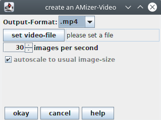
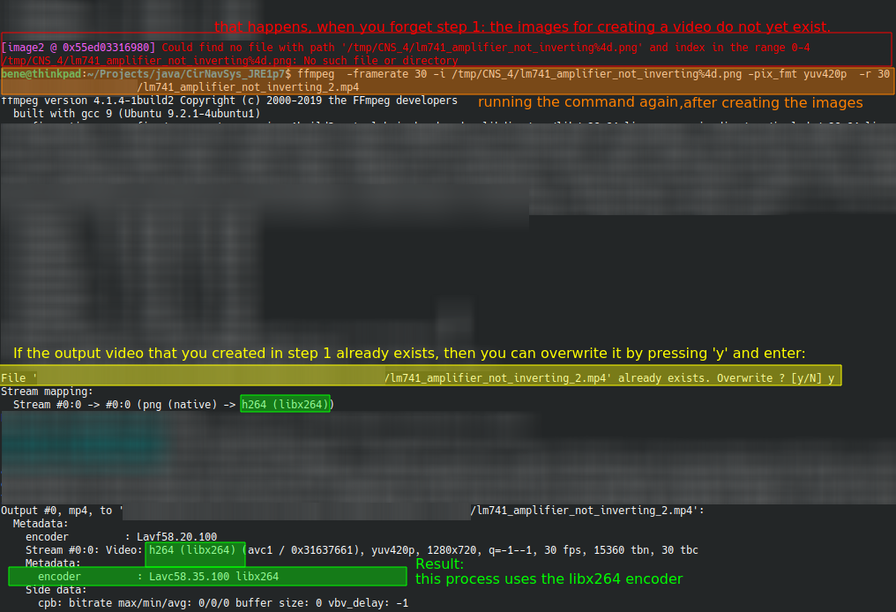

Before you can make a video, you need to run an analysis because, in the analysis the values get calculated, which will be shown in the video.
Chapter 2: The video creation window and how to use it

You can open a dialog for creating a video either by pressing the "v"-button when the main window of AniCAD is active, or by klicking "Output" -> "create a video". The dialog should look like
this image. Here you can:
set the data-format of the output video
set the file under which the video is stored
set the frame rate of the video
turn autoscaling on or off
As soon as you click the "okay"-button in this dialog, the video-creating process starts.
Chapter 3: Input and output settings
In the creation window, there are two fields, in which you can enter the input and output parameters of ffmpeg.
Here you can enter the options that are specified in the options list from the FFmpeg website.
But since that list is quite long and contains many settings and some settings are more important than others, here is a selection of recommended output options:
-pix_fmt yuv420p States that images in the output video file shall be saved in the YUV420p format (wikipedia). Since this option is more efficient than the usual RGB format (for the same video quality, it needs less space on your hard drive), it is set by default in the settings.
chapter 3.1: setting the video output quality
there are several settings that have an effect on the output video quality. Also, the file size corresponds to the video quality. Therefor, you might either want to increase video quality if either your video is not sharp enough or decrease the video quality the file is too large:
-crf 18 sets the Constant Rate Factor. The value 18 here is a recommended value to start with*:
if you enter a lower value, then the video quality and the file size increase,
if you enter a higher value, then the video quality and the file size decrease.
*(that is if your computer is using the x264 video encoder. But if you are using an other encoder, such as the vp9 video encoder, then a different value might be better, such as 10. You might want to try out different values.)
You can also set the output bitrate, as described in the ffmpeg wiki. An example output setting to do that would be:
-b:v 2M -maxrate 2M -bufsize 1M
Please keep in mind that the output video quality depends on the image size and the bitrate.
So if you set a constant bitrate, and make videos for small circuits with small images then the quality is high. But if you use the same bitrate for a large circuit, the output video quality is low.
If you are using the mpeg-4 encoder (not to be confused with the .mpeg or .mp4 output formats), then you can set the variable bit rate with -qscale n, such as -qscale 3
The value 3 here is a recommended value to start with*:
if you enter a lower value, then the video quality and the file size increase,
if you enter a higher value, then the video quality and the file size decrease.
chapter 3.2: How to find your default encoder
1. Open the video creation window shown above and create a video with it. (Or at least create the images from process)
2. Then open the window again, make the same settings as Step 1.
3. click on the cmd button, and copy the command shown in the text window which appears after clicking on that button.
4.Paste the whole command into your command terminal. Press enter.
You should then see an output similar to this image
(click to increase):

Chapter 4: What to do if automatical video creation fails
chapter 4.1:Option A:Repair
There is a document that explains how to repair the video creation.
chapter 4.2:Option B: create videos manually
If you don't want to install FFmpeg, or if one of the following happens when you try to create a video:
- the video creation step 1 works but step 2 freezes, or
- the video step 2 does not freeze but takes forever, or
- the created video file is just a few bytes large and does not show anything
then you can still create AniCAD videos. Either by calling FFmpeg in the command terminal, or creating the video without FFmpeg
How to call FFmpeg manually:
If calling FFmpeg automatically by the AniCAD does not work, then You can try to work around that problem by calling FFmpeg manually via command terminal.
1. open the video creation dialog
2. select at which file you want to save the video.
3. click on "cmd" button.
-> A text window appears. Copy the command line from that dialog and close the window again.
4. in the video creation dialog, click on ok.
-> The video creation process starts. It will fail in part 2, but at least the part 1 should succeed. That part 1 is the creation of images into a temporary folder.
5. As soon as Part 1 of the process is finished, close the video creation dialog, but do NOT close the AniCAD.
6. open your command terminal and paste the command line that you have copied in step 3.
7. check whether the output file path is correct.
-- If it contains some text like SET\PATH\TO\OUTPUT_VIDEO_FILE.mp4 , then it's wrong and you should replace that text by your desired output path.
-- Also, if the path contains any whitespace characters, then it should be inside a pair of apostrophes "
8. press enter.
-> Part 2 of the video creation runs in the terminal. That part is creating a video out of the images created before. Wait until this step is done. Now your video is created.
How to create a video without FFmpeg
You can create AniCAD-videos without FFmpeg but some other video program (*1), because in the first step of each video creation, the AniCAD creates all the images for that video and saves them in a temporary folder (*2). So even when FFmpeg is not installed, you can use these images to create a video with a program of your choice:
1. open the video creation dialog of the AniCAD
2. click on "create", without setting any output video file
-> The video creation process starts. It may fail in part 2, but at least the part 1 should succeed. That part 1 is the creation of images into a temporary folder.
3. copy the path of the temporary folder. (image)
4. open the temporary folder. There are the just created images, the folder should look like this
5. use these images and your selected video program(*1) to create a video.
(*1) for example OpenShot Video Editor
(*2) temporary folder means that the folder and everything in it will get erased as soon as you close the AniCAD, or as soon as you restart the computer. By default, that folder gets erased when closing the AniCAD, but in the program settings you can turn off this erasing the temp folder.